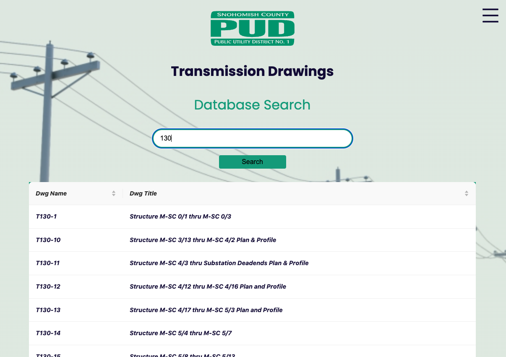
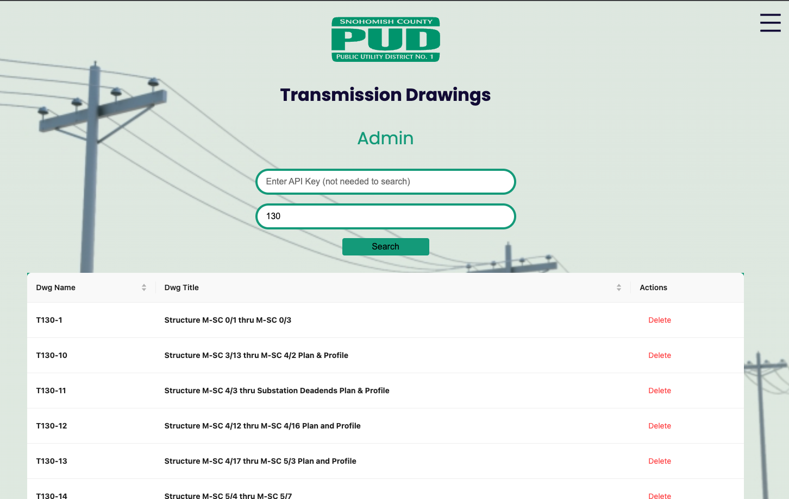

Front-End#
Purpose#
Provide users with the ability to interact with the Snohomish County PUD transmission drawings database.
Getting Started#
To run the application locally:#
Clone the
tx_dwgsrepository if you haven’t done so already.Change into
front-enddirectory.cd front-end
Install the npm packages.
npm install
Start the application.
npm run dev
Application Design & Structure#
Tools#
Design Choices#
We decided to create a React application via the NextJS framework. We initialized the NextJS framework with the app directory.
General Structure#
The
front-enddirectory holds all the code for the UI.Within the
front-enddirectory, theappfolder holds all the code for the views, components, and styling.Per NextJS standards, the
page.jsxfile in theappdirectory is the default/landing view, and other routes/views are defined in subdirectories of theappdirectory.Resuable components exist within the
componentsdirectory.All styles are defined within the
globals.cssfile.
Views#
Search#
The default view which allows any user to query the transmission drawing database and view the results. See the API documentation Response section for details on what responses will be returned from different query inputs.

Data#
Provides insights and analysis of the transmission drawing data.
Admin#
Currently allows users with a valid API key to perform Delete actions on search result records.

GitHub Action Workflows#
ESLint#
Pertains to the
front-enddirectory.Includes
.jsand.jsxfiles types.Runs on all pushes to GitHub and PRs/merges into
main.
Implements ESLint Standard configuration.